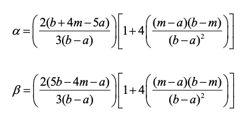

Notes for Activity Crashing Project¶
A. Program 1: Generate a graph (activity on arrow) for 1 project.
The graph should be acyclic, connected and should have one start and end point.
For detailed description of the steps to follow see "Graph Generation Algorithm.pdf". Basic description of steps to follow:
-
Generate a skeleton graph such that it has multiple layers and every node in lower layer is connected to one node in higher layer.
-
Randomly add arcs from lower layers to higher layers.
-
Add arcs between layers such that we do not create cycles (rooted directed trees)
-
Check for connectivity
-
Discard if not connected, keep the graph if connected.
-
Repeat 1-5, if we did not get a graph
B. Program 2: Obtain marginal PERT distributions of activity times
-
Generate distributions of each activity of the project. To do this for each arc "a_ij" we do:
a. Select an optimistic value for arc a_ij (denoted by a). We do this by sampling from a geometric distribution with parameter p_a. (use numpy.random.geometric for this).
b. Select the difference m-a, where a is the optimistic value and m is the most likely value. Do this by sampling from a geometric distribution with parameter p_ma
c. Select the difference b-m, where b is the pessimistic value and m is the most likely value. Do this by sampling from a geometric distribution with parameter p_bm.
d. We use the sampled differences to obtain the pessimistic (b) and most likely (m) values.
e. We need to do some trial an error testing to set these values. What is important is that the optimistic is positive enough such that we do not get negative values when sampling from the corresponding PERT distribution. We also want p_bm and p_ma to be similar (but this we might change).
f. Since we will generate many graphs, eventually we will select the parameters p_a, p_ma, and p_bm randomly. But, at the beginning we do not need to do it like that. So, initially just set these parameters by hand.
-
For each arc, a_ij, we will use the PERT distribution with the [a, m, b] values obtained for it in Step 1 above. To do this we translate the PERT into its beta-distribution counterpart. The beta distribution (see scipy.stats.beta) uses two parameters: α and β. We obtain α and β from the generated [a, m, b] values in the following way:

See file "Project Simulation Using Pert-beta distributions.pdf", equations (4') -- (6').
a. In this way we know the distributions that we will eventually use for each of the activity times.
b. For activity represented by arc a_ij, we denote its Pert distribution by D_ij (D_ij is really given by the beta distribution with parameters \alpha, \beta defined before).
i. For later, we really want to generate a Python beta-PERT random variable. It is important to use here something like\ D_ij = scipy.stats.beta(α, β) ii. We will use D_ij with the Gaussian copula and a generated correlation matrix (next section) to generate the scenarios. -
The output of this program is the set of all PERT-Beta distributions (one per activity arc).
Important note: We will later use the distributions used to generate random [a, m, b] to model the belief vs. truth dichotomy of simulation.
Program 3: Generate correlation matrix
-
Select order for arcs
-
Generate a symmetric matrix of dimension |arcs|*|arcs| with diagonal entries all equal to 1 (to do this just generate the lower triangle and reflect it in the upper triangle).
-
For every set of arcs in the lower triangle we generate some random value between -1 and 1.
-
Some arcs should be highly correlated (we can use a bias in the generation to achieve this).
-
Obtain a nearest correlation matrix to our generated matrix. We do this by applying the algorithms from:\ \ https://nickhigham.wordpress.com/2013/02/13/the-nearest-correlation-matrix/
a. A Python implementation of the nearest correlation algorithm can be found here: (the files are included in the main email)\ https://github.com/mikecroucher/nearest_correlation
C. Program 4: Generate scenarios
The number of scenarios should be a parameter of the algorithm that we can adjust. The gist of the generation is to define a multivariate distribution which marginals are the exact same PERT distributions obtained before. The multivariate distribution will join the PERT marginals via a Gaussian Copula with the generated correlation matrix. The following steps explain how to do this. We repeat these steps for n number of scenarios:
-
Let d be the number of activities and \({a_1, ..., a_d}\) be the set of all activities. Create a multivariate standard-normal random variable with the generated correlation matrix and sample n times from it. We do this at once with the following command:
B1 = numpy.random.multivariate_normal(mean, corr, n)
where mean = \([0, ... , 0]\) is an array of \(d\) zeroes, corr is the generated correlation matrix (Program 3), and n is the number of samples. The output of this is an array B1 with n elements where each B1[i] is a full sample of the multivariate normal distribution. B1[i] is an array of d values. We will use B1[i] to construct the ith scenario, i=0,...,n-1.
-
Apply:
B2 = scipy.stats.norm.cdf(B1)
to transform normal to uniform random variates, and for each column/variable obtain uniform marginal distributions. At this point each column of B2 is a set of uniformly [0,1] distributed samples taken with correlation given by the generated correlation matrix. Each row of B2 has length d (i.e. number of arcs in the network). Each row will be transformed into a scenario.
-
To each column i of B2, apply the inverse cdf of the PERT-beta distribution obtained in Program 2 for the corresponding arc (activity). Remember that each column correspond to an activity, so we need to map to its beta distribution D_i. We can do this similar to this:
a. Suppose we have 3 activities and in Program 2 we did:
D_0 = scipy.stats.beta(0.3, 0.4) D_1 = scipy.stats.beta(0.67, 1.4) D_2 = scipy.stats.beta(1.3, 0.78)b. Then we would do: (ppf means inverse CDF in numpy)
D_0.ppf(B2\[:,0\]) D_1.ppf(B2\[:,1\]) D_2.ppf(B2\[:,2\]) -
We want to have the output of step 3 above in a matrix so we stack the results of Step 3.b into a matrix by columns:
a. Instead of Step 3.b we do:
S = np.column_stack((D_0.ppf(B2[:,0]), D_1.ppf(B2[:,1]), D_2.ppf(B2[:,2]))) -
At this point we have a matrix of samples S with "d" (number of activities) columns and "n" (number of samples) rows. Each row of S is a scenario.